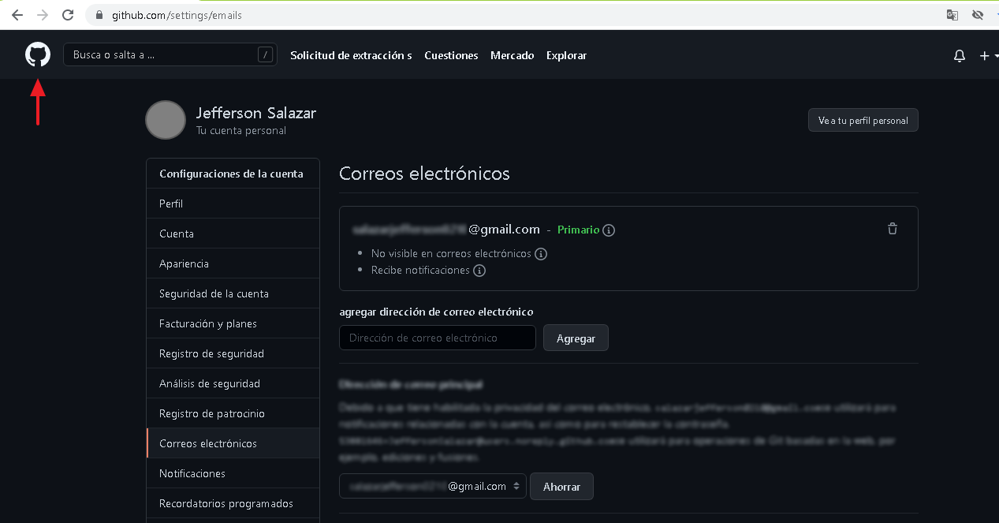
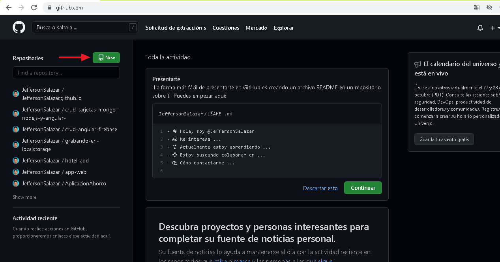
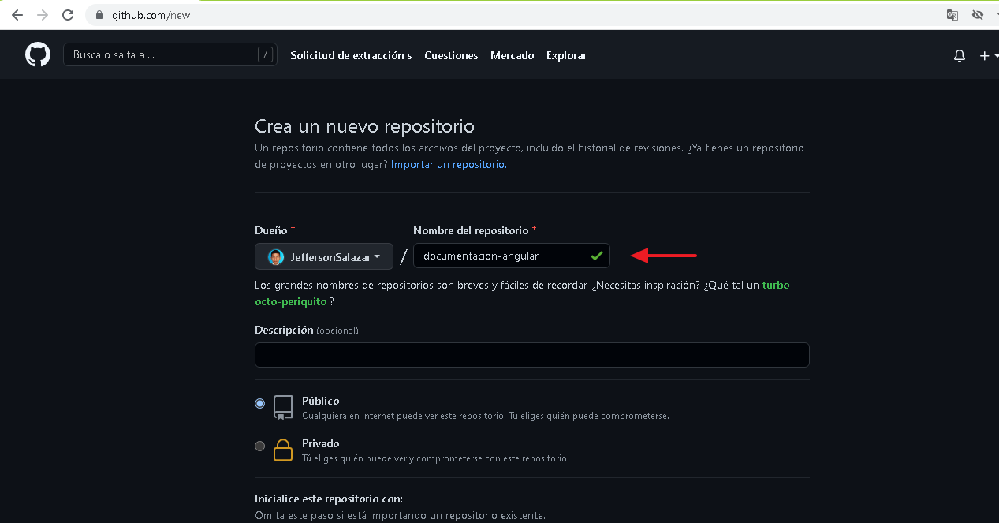
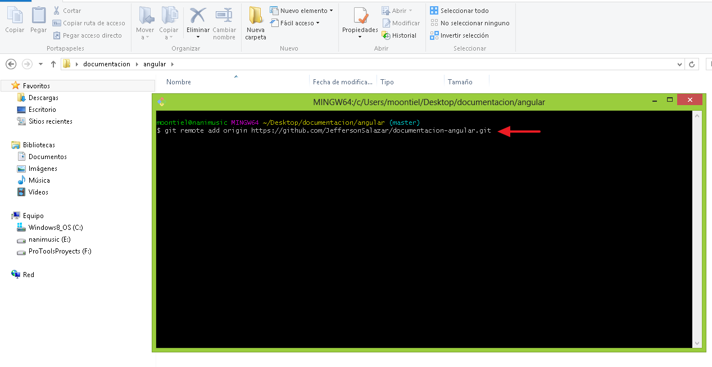
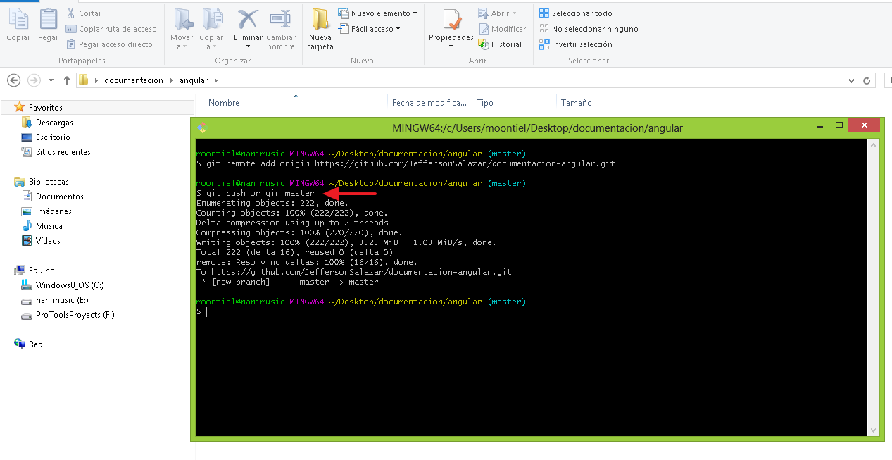

02. GitHub
Veamos como subir nuestro proyecto a un repositorio en la nube con github haciendo uso de la consola git bash
01. Ingresando a github

02. Abriendo panel de proyectos

03. Creando un nuevo repositorio

04. Nombre del repositorio

05. Url del repositorio

-------------------- End --------------------
01. Git remote add origin "url": Conectando git y github

02. Git push origin "rama": Subiendo archivos a github

03. Repositorio creado con exito

End Github